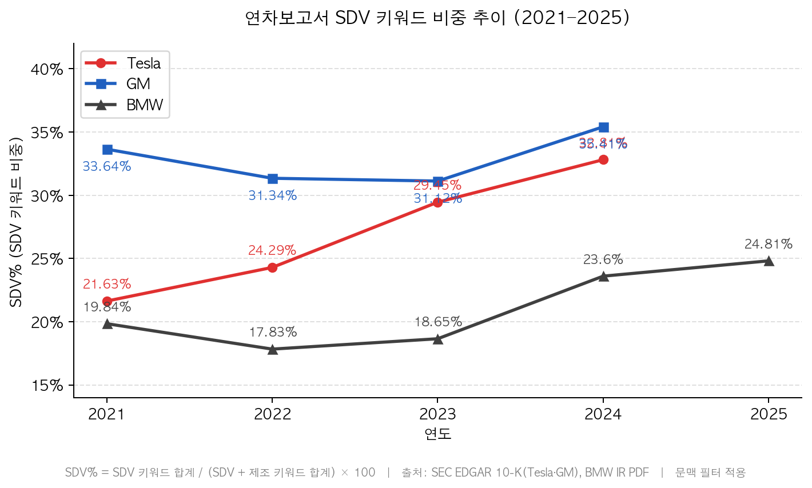
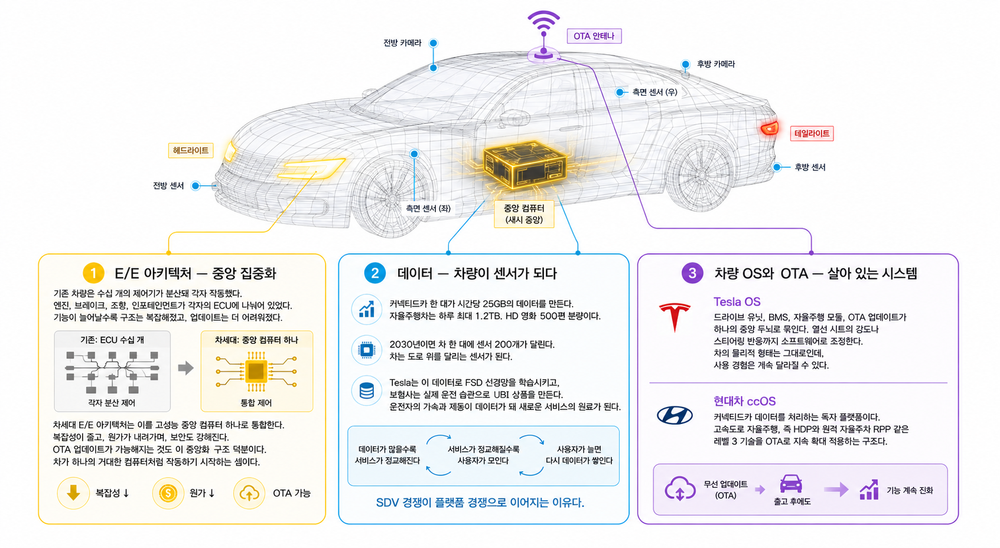
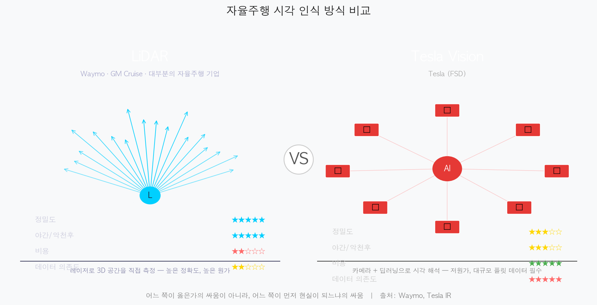
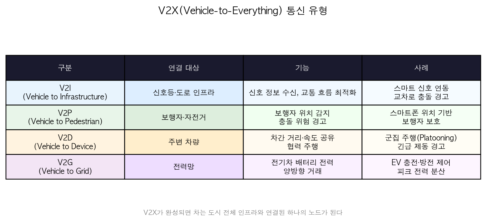
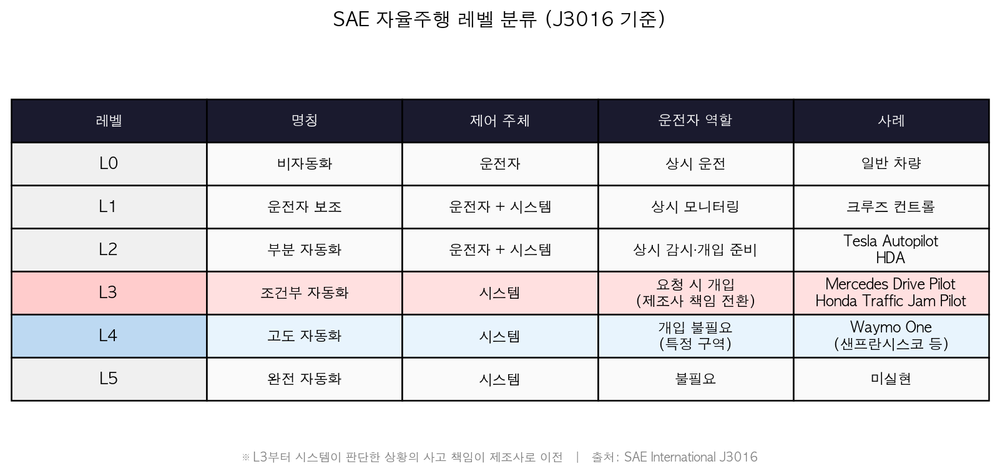

스스로 생각하고 달리는 차가 온다The Self-Thinking, Self-Driving Car Is Coming
SDV · 자율주행 · 플랫폼 전쟁SDV · Autonomous Driving · Platform War
지우, 대현Jiwoo, Daehyeon
스스로 생각하고 달리는 차가 온다The Self-Thinking, Self-Driving Car Is Coming
SDV · 자율주행 · 플랫폼 전쟁 — 자동차 산업 100년, 다음 마일스톤SDV · Autonomous Driving · Platform War — 100 Years of Automotive Industry, the Next Milestone
——————
연차보고서가 먼저 말했다The Annual Reports Spoke First
숫자로 증명하다Proven in Numbers
자동차 회사가 자신을 설명하는 방식이 달라지고 있다.The way automakers describe themselves is changing.
예전의 자동차 산업을 말할 때 중심에 있던 단어는 비교적 분명했다. 제조, 공장, 엔진, 생산 능력, 공급망. 자동차는 오래도록 거대한 제조업의 상징이었고, 좋은 차를 만든다는 것은 좋은 공장을 운영하고, 좋은 부품을 조달하고, 정교한 하드웨어를 조립한다는 뜻에 가까웠다.The words at the center when discussing the old automotive industry were comparatively clear: manufacturing, factory, engine, production capacity, supply chain. Cars were for a long time the symbol of massive manufacturing, and making a good car was close to meaning running a good factory, sourcing good parts, and assembling precision hardware.
그런데 최근 몇 년 사이, 가장 보수적이고 딱딱한 문서 안에서 다른 단어들이 늘어나기 시작했다. 소프트웨어, OTA, 자율주행, AI, 커넥티드. 광고 문구라면 그저 유행어처럼 넘길 수 있다. 하지만 연차보고서라면 이야기가 다르다.But in recent years, different words have begun to grow in the most conservative, rigid of documents: software, OTA, autonomous driving, AI, connected. In advertising copy, they could be dismissed as mere buzzwords. In annual reports, the story is different.
2021년, Tesla 연차보고서에서 "software"라는 단어는 278번 등장했다. 2024년, 그 숫자는 419번이 됐다. 같은 기간 "manufacturing"은 줄었다.In 2021, the word "software" appeared 278 times in Tesla's annual report. By 2024, that number became 419. In the same period, "manufacturing" declined.
이건 마케팅 언어가 아니다. 연차보고서는 SEC에 제출되는 법적 문서다. 투자자에게 책임지는 언어이고, 기업이 가장 신중하게 고른 단어들의 집합이다. 그래서 이 변화는 단순한 표현상의 변화가 아니라, 기업이 스스로를 어떤 산업의 플레이어로 정의하고 있는지를 보여주는 신호에 가깝다.This is not marketing language. The annual report is a legal document filed with the SEC — language accountable to investors, a collection of the most carefully chosen words a company has. So this change is not a simple shift in expression, but something closer to a signal showing how a company defines itself as a player in which industry.
우리는 Tesla·GM·BMW 3개사의 연차보고서, 즉 10-K와 BMW IR PDF를 직접 추출했다. SDV 키워드인 software, OTA, autonomous, AI, connected 등과 제조 키워드인 manufacturing, assembly, powertrain 등을 세어 비율을 냈다. 암호화폐나 재무 맥락에서 발생할 수 있는 노이즈는 문맥 필터로 걸러냈다.We directly extracted annual reports from Tesla, GM, and BMW — 10-K filings and BMW IR PDFs. We counted SDV keywords such as software, OTA, autonomous, AI, and connected alongside manufacturing keywords such as manufacturing, assembly, and powertrain, and calculated their ratios. Noise that could arise from cryptocurrency or financial contexts was filtered out using context filters.
결과는 선명하다. Tesla는 4년 만에 21.6%에서 32.8%로 +11.2pp 올랐다. GM은 33.6%에서 35.4%로 완만하게 올라갔다. BMW는 19.8%에서 24.8%로 꾸준히 상승했다.The results are clear. Tesla rose from 21.6% to 32.8% — +11.2pp in four years. GM climbed gradually from 33.6% to 35.4%. BMW rose steadily from 19.8% to 24.8%.
SDV% 추이 — Tesla · GM · BMW 2021-2025SDV% Trend — Tesla · GM · BMW 2021–2025

Tesla +11.2pp, GM +1.8pp, BMW +5pp | 출처: SEC EDGAR 10-K(Tesla·GM), BMW IR PDFTesla +11.2pp, GM +1.8pp, BMW +5pp | Source: SEC EDGAR 10-K (Tesla·GM), BMW IR PDF
방향이 갈렸다.전략 발표회에서가 아니라, 보고서 언어에서 먼저 갈렸다.The paths diverged — not at strategy presentations, but in the language of reports first.
물론 단어 빈도만으로 기업의 미래를 단정할 수는 없다. 하지만 기업이 반복해서 쓰는 단어는 그 기업이 어디에 무게를 두고 있는지 보여준다. 특히 그것이 법적 책임이 따르는 공식 문서라면 더 그렇다.Of course, word frequency alone cannot determine a company's future. But the words a company uses repeatedly show where it is placing its weight — especially when those words appear in official documents that carry legal accountability.
"연차보고서의 단어 하나하나가그 방향을 먼저 말하고 있다.""Every word in an annual report speaks to that direction first."
이 데이터가 이 글의 출발점이다. 자동차 산업에서 지금 무슨 일이 벌어지고 있는지, 기업들은 이미 가장 공식적인 언어로 말하고 있다. 이제 남은 질문은 하나다. 왜 자동차 회사들은 더 이상 자동차를 단순한 제조품으로만 설명하지 않게 되었을까.This data is the starting point of this article. What is happening in the automotive industry right now — companies are already speaking about it in their most official language. Only one question remains: why have automakers stopped describing cars as mere manufactured goods?
——————
하드웨어가 레드오션이 된 이유Why Hardware Became a Red Ocean
경쟁 기준이 바뀌었다The Competitive Standard Changed
내연기관차: 엔진이 곧 경쟁력이었다ICE Vehicles: The Engine Was the Competitive Edge
지난 100년간 자동차의 경쟁 기준은 비교적 단순했다. 얼마나 강한 엔진을 만드느냐, 얼마나 정밀한 변속기를 쓰느냐, 섀시와 서스펜션을 얼마나 잘 튜닝하느냐. 좋은 차를 설명하는 언어는 대부분 도로 위의 감각에서 출발했다.For the past 100 years, the competitive standard in cars was comparatively simple: how powerful an engine you could build, how precise a transmission you could use, how well you could tune the chassis and suspension. The language describing a good car started mostly from the sensations on the road.
BMW의 "달리는 즐거움", Porsche의 "911이 911인 이유"도 결국 이 감각 위에 세워졌다. 브랜드의 언어는 감성적이었지만, 그 감성을 가능하게 한 것은 아주 물리적인 기술이었다. 엔진, 변속기, 섀시, 서스펜션. 자동차 회사들은 이 영역에서 수십 년 동안 자신만의 공급망을 구축해왔다.BMW's "The Joy of Driving" and Porsche's "Why a 911 is a 911" were ultimately built on this sensation too. Brand language was emotional, but what made those emotions possible was deeply physical technology: engine, transmission, chassis, suspension. Automakers built their own supply chains in this domain over decades.
바로 이것이 진입 장벽이었다.자동차 산업은 오래된 산업이었고, 오래된 만큼 쉽게 따라잡을 수 없는 산업이었다.This was the barrier to entry. The automotive industry was an old industry — and precisely because it was old, it was an industry that could not be easily caught up to.
전기차: 배터리가 새 경쟁 축이 되다EVs: The Battery Becomes the New Competitive Axis
전기차는 이 구조를 해체했다. 엔진을 구성하던 6,900개 부품이 사라지고, 구동 전달 체계 부품은 5,700개에서 3,600개로 줄었다. 내연기관차가 약 3만 개의 부품으로 만들어졌다면, 전기차는 약 2만 개의 부품으로 달린다.EVs dismantled this structure. The 6,900 parts that made up an engine disappeared, and powertrain components were reduced from 5,700 to 3,600. If an ICE vehicle was built from approximately 30,000 parts, an EV runs on approximately 20,000.
부품이 줄었다는 말은 단순히 차가 간단해졌다는 뜻이 아니다. 그 안에는 사라진 노하우가 있고, 사라진 공급망이 있으며, 사라진 진입 장벽이 있다. 내연기관 시대에 자동차 회사를 지켜주던 기술적 성벽이 전기차 시대에는 이전만큼 높지 않게 된 것이다.Fewer parts does not simply mean cars got simpler. Within that reduction lies vanished know-how, vanished supply chains, and vanished barriers to entry. The technological fortress that protected automakers in the ICE era is no longer as high in the EV era.
하드웨어는 레드오션이 됐다Hardware Has Become a Red Ocean
배터리 셀 원가는 2015년 kWh당 350달러에서 2024년 100달러 아래로 떨어졌다. 각각의 배터리를 제작하는 브랜드는 다르지만, 그 안에 들어가는 핵심 부품은 점점 표준화되고 있다.Battery cell costs fell from $350 per kWh in 2015 to below $100 in 2024. While the brands manufacturing each battery differ, the core components inside are increasingly standardized.
물론 배터리는 여전히 중요하다. 주행거리, 충전 속도, 안전성, 원가를 결정하는 핵심 요소이기 때문이다. 다만 배터리만으로 앞으로의 차별화를 모두 설명하기는 어려워졌다. 모두가 비슷한 배터리를 쓸 수 있는 순간, 자동차 회사는 다른 곳에서 차이를 만들어야 한다.Of course, batteries still matter — they determine driving range, charging speed, safety, and cost. But batteries alone have become insufficient to explain all future differentiation. The moment everyone can use a similar battery, automakers must create differences elsewhere.
그 지점에서 소프트웨어가 등장한다.That is where software enters.
부품이 줄었다는 건 단순화가 아니다. 경쟁의 중심이 하드웨어의 복잡성에서 소프트웨어의 정교함으로 이동하고 있다는 신호에 가깝다. 예전에는 엔진을 얼마나 잘 만들었는지가 브랜드의 실력을 보여줬다면, 앞으로는 차량이 얼마나 자연스럽게 업데이트되고, 데이터를 얼마나 잘 활용하며, 운전자와 어떤 방식으로 상호작용하는지가 더 중요해진다.Fewer parts is not simplification. It is closer to a signal that the center of competition is moving from the complexity of hardware to the sophistication of software. If it was how well you built an engine that showed a brand's capability in the past, going forward how naturally a vehicle updates, how well it utilizes data, and how it interacts with the driver becomes more important.
하드웨어 경쟁이 완전히 끝났다고 말하기는 어렵다. 자동차는 여전히 도로 위를 달리고, 안전과 내구성은 물리적 완성도에서 나온다. 다만 하드웨어만으로 이기는 시대는 지나가고 있다.It is difficult to say the hardware competition has completely ended. Cars still drive on roads, and safety and durability come from physical quality. But the era of winning on hardware alone is passing.
"하드웨어가 차의 기본기를 만들었다면,소프트웨어는 앞으로 그 차가 어떻게 살아 움직일지를 결정한다.""If hardware built the car's fundamentals, software will decide how that car lives and moves going forward."
——————
SDV: 차량이 소프트웨어로 정의되다SDV: The Vehicle Defined by Software
구독·데이터·OS — 차는 어떻게 달라지는가Subscription · Data · OS — How Cars Change
SDV(Software Defined Vehicle)는 주행 성능, 편의 기능, 안전 사양, 감성 품질까지 소프트웨어를 통해 지속적으로 업데이트되는 차다.SDV (Software Defined Vehicle) is a car that is continuously updated through software across driving performance, convenience features, safety specifications, and experiential quality.
핵심은 자동차가 고정된 제품에서 계속 바뀌는 시스템으로 이동한다는 점이다. 예전의 자동차는 구매하는 순간 기능이 거의 확정됐다. 옵션을 고르고, 차를 인도받고, 그 차를 몇 년 동안 탔다. 중간에 바뀌는 것은 소모품이나 부품 정도였다.The key is that cars are moving from fixed products to continuously changing systems. In the past, a car's features were nearly confirmed the moment of purchase. You selected options, took delivery, and drove that car for years. What changed in between was consumables and parts at most.
SDV는 다르다. 차를 사는 순간이 끝이 아니라 시작이 된다. 구매 이후에도 기능이 바뀌고, 성능이 조정되고, 새로운 서비스가 추가된다. 자동차가 출고 시점의 스펙으로만 평가되는 제품이 아니라, 수명 주기 전체에 걸쳐 업데이트되는 플랫폼이 되는 것이다.SDV is different. The moment of buying a car is not the end but the beginning. Features change after purchase, performance is adjusted, and new services are added. The car becomes not a product evaluated only by its delivery-day specs, but a platform updated throughout its entire lifecycle.
소프트웨어가 블루오션인 이유Why Software Is a Blue Ocean
하드웨어 산업의 수익 구조는 단순했다. 차를 파는 순간 가장 큰 매출이 발생한다. 정비, 부품, 금융 수익이 있지만 팔면 끝이었다.The profit structure of the hardware industry was simple: the largest revenue occurs the moment you sell the car. There is maintenance, parts, and financing revenue, but once sold, it was over.
소프트웨어는 다르다. 차를 판 이후에도 구독, 업데이트, 데이터 기반 서비스 수익이 발생한다. 대표적으로 완전 자율주행 소프트웨어인 Tesla FSD는 월 99달러다. GM의 OnStar와 Super Cruise 구독은 이미 수십억 달러 규모의 반복 수익을 만들어낸다. 차량 1대가 수명 내내 수익을 만드는 구조가 열린 것이다.Software is different. Even after selling the car, subscription, update, and data-based service revenue is generated. Tesla FSD, the full self-driving software, is a representative example at $99 per month. GM's OnStar and Super Cruise subscriptions already generate billions of dollars in recurring revenue. A structure where a single vehicle generates revenue throughout its lifetime has opened up.
소프트웨어 시장은 아직 아무도 완전히 장악하지 못했다. 엔진은 100년의 역사가 있고, 배터리는 CATL이 앞서 있다. 차량 OS만은 아직 절대적인 1등이 없다.The software market has not yet been fully captured by anyone. Engines have 100 years of history, and CATL leads in batteries. In vehicle OS alone, there is still no absolute number one.
이 말은 지금 들어오는 기업이 그 자리를 가져갈 수 있다는 뜻이기도 하다.This also means that companies entering now can take that position.
특히, 운전은 자동차에서 가장 오래된 경험이고, 가장 바꾸기 어려운 영역이다. 그만큼 그걸 먼저 해낸 기업이 받을 수 있는 가격도, 쌓을 수 있는 격차도 가장 크다. SDV가 열어놓은 구독 수익 구조의 끝에 자율주행이 있는 건 기술의 자연스러운 순서이자, 돈의 논리다.In particular, driving is the oldest experience in the car and the hardest area to change. Precisely because of that, the price the company that achieves it first can command, and the gap it can build, are the greatest. That autonomous driving sits at the end of the subscription revenue structure opened by SDV is both the natural technological sequence and the logic of money.

SDV의 세 가지 구성 요소SDV's Three Components
——————
PART 2PART 2
자율주행: 기술이 아니라 허가의 문제Autonomous Driving: A Question of Permission, Not Technology
LiDAR·SLAM·V2X — 그리고 법의 벽LiDAR · SLAM · V2X — And the Wall of Law
샌프란시스코 미션 디스트릭트, 새벽 2시. 핸들 없는 차가 골목을 돌아 나온다. 운전석은 비어 있다. 뒷좌석에 탄 승객은 핸드폰을 보고 있다.San Francisco Mission District, 2:00 AM. A car without a steering wheel rounds a corner. The driver's seat is empty. A passenger in the back is looking at their phone.
Waymo가 2023년 캘리포니아에서 24시간 무인 운행 허가를 받은 뒤 벌어지고 있는 일상이다. 자율주행은 먼 미래의 장면이 아니다. 지금 이 순간에도 누군가의 출퇴근길을 달리고 있다.This is daily life unfolding since Waymo received a 24-hour unmanned operation permit in California in 2023. Autonomous driving is not a scene from the distant future. Right now, at this very moment, it is driving someone's commute.
차가 세상을 보는 방법How the Car Sees the World
자율주행이 하려는 일은 크게 세 가지다. 주변을 보고, 자신이 어디 있는지 알고, 주변과 소통하는 것. 각각 인지, 위치 파악, 통신에 해당한다. 이 세 축이 동시에 맞물려야 차가 스스로 달릴 수 있다.What autonomous driving tries to do is broadly three things: see the surroundings, know where it is, and communicate with the surroundings — corresponding to perception, localization, and communication respectively. All three axes must interlock simultaneously for a car to drive itself.
① 시각 — LiDAR vs Tesla Vision① Vision — LiDAR vs Tesla Vision
LiDAR, 즉 Light Detection And Ranging은 초당 수백만 개의 레이저 빔을 발사하고, 물체에 반사돼 돌아오는 시간을 측정해 3차원 공간을 그려낸다. 야간, 폭우, 역광 같은 조건에서도 정밀하게 주변을 인식할 수 있다.LiDAR — Light Detection And Ranging — fires millions of laser beams per second, measures the time it takes them to reflect off objects and return, and draws a three-dimensional space. It can precisely perceive surroundings even in conditions like nighttime, heavy rain, and backlighting.
단점은 가격이다. Waymo가 탑재한 LiDAR는 대당 수만 달러에 달했다.The drawback is cost. The LiDAR Waymo equipped cost tens of thousands of dollars per unit.
Tesla Vision은 반대 접근이다. 카메라 여러 대로 모든 방향의 시각 정보를 모으고, 딥러닝 모델로 해석한다. LiDAR보다 훨씬 싸다. 단, 충분한 학습 데이터가 전제돼야 한다. Tesla가 600만 대 플릿을 활용하는 이유가 여기에 있다.Tesla Vision is the opposite approach: gathering visual information from every direction with multiple cameras and interpreting it with deep learning models. Much cheaper than LiDAR — but requires sufficient training data as a prerequisite. That is why Tesla utilizes a fleet of 6 million vehicles.
먼저 현실이 되는 쪽에 따라 시장의 흐름 싸움에 가깝다.It is closer to a battle over which becomes reality first, and the market will follow.

어느 쪽이 옳은가의 싸움이 아니라, 어느 쪽이 먼저 현실이 되느냐의 싸움 | 출처: Waymo, Tesla IRNot a battle of which is correct, but which becomes reality first | Source: Waymo, Tesla IR
② 위치 파악 — SLAM② Localization — SLAM
차가 달리는 동안 자신의 위치를 실시간으로 계산하는 기술이 SLAM이다. 주변 지형지물을 읽으면서 동시에 지도를 그린다. GPS가 끊기는 터널 안에서도, 처음 달리는 골목에서도 차는 자신의 위치를 알아야 한다.SLAM is the technology that calculates a car's position in real time while driving. It reads surrounding landmarks while simultaneously building a map. Whether inside a tunnel where GPS is cut off or on an alley the car is traversing for the first time, the car must know its position.
자율주행차에게 위치 파악은 단순한 내비게이션이 아니다. 내가 차선 안에 있는지, 보행자와 얼마나 떨어져 있는지, 다음 코너를 어떻게 돌아야 하는지를 결정하는 기본 조건이다.For an autonomous vehicle, localization is not simple navigation — it is the fundamental condition for deciding whether you are within your lane, how far you are from pedestrians, and how to take the next corner.
③ 통신 — V2X③ Communication — V2X
차가 혼자 보는 것만으로는 부족하다. V2X, 즉 Vehicle-to-Everything은 자율주행차가 주변 기기, 인프라, 보행자와 통신하는 기술 일체를 말한다. V2I는 신호등과 도로, V2P는 보행자, V2D는 다른 차, V2G는 전력망과의 연결을 뜻한다.A car seeing alone is not enough. V2X — Vehicle-to-Everything — refers to all technologies by which autonomous vehicles communicate with surrounding devices, infrastructure, and pedestrians. V2I connects with traffic signals and roads, V2P with pedestrians, V2D with other vehicles, and V2G with the power grid.
V2X가 완성되면 차는 혼자 달리는 기계가 아니다. 도시 전체 인프라와 연결된 하나의 노드가 된다. 도로와 신호등, 전력망, 보행자 기기까지 연결되는 순간 자율주행은 차량 단독 기술을 넘어 도시 운영 기술이 된다.When V2X is complete, the car is no longer a machine driving alone — it becomes a single node connected to the entire city infrastructure. The moment roads and traffic signals, the power grid, and pedestrian devices all connect, autonomous driving transcends individual vehicle technology to become city-operating technology.
V2X 유형 — V2I · V2P · V2D · V2GV2X Types — V2I · V2P · V2D · V2G

V2X가 완성되면 차는 도시 인프라와 연결된 하나의 노드가 된다When V2X is complete, the car becomes a node connected to urban infrastructure
흥미로운 점은, 기술은 이미 어느 정도까지 왔다는 사실이다. 정작 더 어려운 것은 누가 책임지느냐의 문제이다.What is interesting is that the technology has already come quite far. What is actually harder is the question of who bears responsibility.
99%가 아니라 나머지 1%의 문제Not 99% — The Remaining 1%
99%의 도로는 이미 해결됐다. 문제는 나머지 1%다. 공사 중 임시 차선, 수신호하는 경찰관, 역주행 오토바이, 눈보라 속 흐린 차선. 사람에게도 당황스러운 상황을 차가 어떻게 해석할 것인가.99% of roads are already solved. The problem is the remaining 1%: temporary lanes under construction, police officers directing traffic by hand, motorcycles driving the wrong way, faded lanes in a snowstorm. How will the car interpret situations that even humans find disorienting?
자율주행의 완성도는 결국 이 1%가 결정한다. 이 1%를 극복하는 데 필요한 것이 엣지 케이스 데이터다. 자주 일어나는 상황을 잘 처리하는 것만으로는 부족하다. 드물지만 치명적인 상황을 얼마나 많이 보고, 얼마나 정확히 학습했는지가 승부를 가른다.Autonomous driving's completeness is ultimately determined by this 1%. What is needed to overcome this 1% is edge case data. Handling frequently occurring situations well is not enough — how many rare but critical situations have been seen, and how accurately they have been learned, determines the contest.
그렇다면 누가 이 1%의 상황에 책임을 지나?Then who bears responsibility for this 1% of situations?
레벨이 바뀌는 순간, 책임이 바뀐다As the Level Changes, Responsibility Changes
SAE, 즉 미국 자동차공학회는 자율주행을 레벨 0에서 5까지 나눈다. 레벨 2까지는 사고가 나면 기본적으로 운전자 책임이다. 운전자는 언제든 개입할 준비가 되어 있어야 한다.SAE — the Society of Automotive Engineers — divides autonomous driving into Levels 0 through 5. Up to Level 2, responsibility in the event of an accident is basically the driver's. The driver must always be prepared to intervene.
하지만 레벨 3부터는 달라진다. 차가 판단한 상황에서 사고가 나면 제조사가 책임을 져야 한다. 여기서부터는 단순히 기술의 문제가 아니다. 보험사, 법원, 입법자가 함께 움직여야 한다.But from Level 3 onward, it changes. If an accident occurs in a situation the car judged, the manufacturer must bear responsibility. From here it is no longer simply a technology problem — insurers, courts, and legislators must all move together.
SAE J3016 기준. L3 전환점: 기술의 문제가 아니라 법·보험·사회 합의의 문제.Per SAE J3016. L3 inflection point: not a technology problem, but a law, insurance, and social consensus problem.
SAE 자율주행 레벨 L0-L5SAE Autonomous Driving Levels L0–L5

L3부터 사고 책임이 제조사로 이전 | 출처: SAE J3016From L3, accident liability transfers to manufacturers | Source: SAE J3016
케이스 스터디: Waymo가 L4에 도달한 방법Case Study: How Waymo Reached L4
Waymo는 2009년 구글 자율주행 프로젝트로 시작했다. 여기까지 오는 데 16년이 걸렸다. LiDAR, 레이더, 카메라를 전부 탑재한 다중 센서 방식으로 샌프란시스코 도심을 달리며 데이터를 쌓았다. 악천후, 공사 구간, 교통 체증 모두 데이터가 됐다.Waymo started in 2009 as Google's self-driving project. Getting here took 16 years. It drove through San Francisco's downtown with a multi-sensor approach — LiDAR, radar, and cameras all equipped — accumulating data. Adverse weather, construction sections, and traffic jams all became data.
2023년 캘리포니아 공공사업위원회, CPUC가 24시간 무인 상업 운행을 허가했다. 이것은 단순한 기술 승인이 아니었다. 법적 허가였다. 차가 스스로 달릴 수 있다는 것뿐 아니라, 그 차가 유상 운행을 해도 된다는 사회적 승인에 가까웠다.In 2023, the California Public Utilities Commission (CPUC) permitted 24-hour unmanned commercial operation. This was not a simple technology approval — it was a legal permit. It was closer to social authorization not only that the car can drive itself, but that it may operate commercially for pay.
2026년 현재 Waymo One은 6개 도시에서 운행 중이며, 주당 45만 회 이상의 유상 운행 실적을 기록하고 있다.As of 2026, Waymo One is operating in 6 cities and recording more than 450,000 paid rides per week.
판이 바뀌면 돈이 먼저 움직인다When the Board Changes, Money Moves First
완성차·빅테크·반도체·한국의 2030 지형도Automakers · Big Tech · Semiconductors · Korea's 2030 Landscape
돈 얘기를 해보자. 2023년 글로벌 자율주행 시장 투자 규모는 약 130억 달러였다. 2030년 예상치는 6,000억 달러를 넘는다. 7년 만에 46배다.Let's talk money. In 2023, global investment in the autonomous driving market was approximately $13 billion. The 2030 estimate exceeds $600 billion — 46 times in 7 years.
하지만 정말 봐야 하는 것은 시장 규모만이 아니다. 이 돈이 어디로 흘러가고 있는지다. 그리고 지금 그 돈은 전통적인 완성차 기업만을 향하고 있지 않다.But what really needs watching is not just market size — it is where this money is flowing. And right now, that money is not flowing only toward traditional automakers.
① 돈은 플랫폼 기업으로 간다① Money Goes to Platform Companies
NVIDIA의 차량용 칩 매출은 2021년 약 5억 달러에서 2024년 40억 달러를 넘어섰다. Qualcomm의 Snapdragon Digital Chassis는 35개 이상의 완성차 브랜드에 탑재될 예정이다. 수주 잔고만 450억 달러다.NVIDIA's automotive chip revenue surpassed $4 billion in 2024, up from approximately $500 million in 2021. Qualcomm's Snapdragon Digital Chassis is set to be installed in more than 35 automaker brands. The order backlog alone is $45 billion.
이 두 회사가 팔고 있는 것은 단순한 부품이 아니다. 차량 안으로 들어가는 플랫폼이다. 자동차의 두뇌와 운영체계, 연결 구조를 장악하려는 시도다.What these two companies are selling is not simple parts — it is the platform going inside the vehicle: an attempt to control the car's brain, operating system, and connectivity structure.
Tesla는 2025년 삼성과 165억 달러 규모의 AI6 칩 계약을 맺었다. Dojo 슈퍼컴퓨터 프로젝트는 종료됐고, 차세대 AI 칩 개발로 방향을 틀었다. 600만 대 플릿이 매일 수집하는 데이터를 학습시키는 인프라에 투자하는 것이다.Tesla signed a $16.5 billion AI6 chip contract with Samsung in 2025. The Dojo supercomputer project was terminated and pivoted to next-generation AI chip development — investing in the infrastructure to train on data the 6-million-vehicle fleet collects daily.
완성차 기업이 OS를 내주면, 결국 하드웨어 공급자가 된다. PC 시대에 Intel이 했던 일, 스마트폰 시대에 Google이 했던 일을 NVIDIA와 Qualcomm이 자동차에서 하려 한다. 플랫폼을 쥔 기업이 생태계를 지배한다는 역사는 이미 반복된 적이 있다.If automakers give up the OS, they ultimately become hardware suppliers. What Intel did in the PC era, what Google did in the smartphone era — NVIDIA and Qualcomm are trying to do it in cars. The history that the company holding the platform dominates the ecosystem has already repeated itself.
② 운전기사 없이 고속도로를 달리는 트럭② Trucks Driving Highways Without Drivers
Waymo의 수익 모델은 두 축이다. Waymo One은 일반 소비자 대상 로보택시고, Waymo Via는 B2B 물류 자율주행이다. Via는 UPS, J.B. Hunt 등과 계약해 텍사스 주간 고속도로에서 화물을 운송한다. 운전기사 없이, 24시간, 장거리를 달린다.Waymo's revenue model has two axes. Waymo One is a robotaxi for general consumers; Waymo Via is B2B logistics autonomous driving. Via has contracts with UPS, J.B. Hunt, and others to transport cargo on Texas interstate highways — without a driver, 24 hours a day, long distance.
트럭 자율주행은 로보택시보다 빠르게 상용화되고 있다. Aurora는 2024년 텍사스에서 완전 무인 상업 운송을 시작했다. 달라스-휴스턴 구간을 운전기사 없이 정기 운행한다. Kodiak Robotics는 군사 물류에도 자율주행 트럭을 공급하고 있다. 고속도로는 변수가 적고, 같은 루트를 반복한다. 택시보다 트럭이 먼저인 이유다.Truck autonomous driving is commercializing faster than robotaxis. Aurora started fully unmanned commercial transport in Texas in 2024, operating the Dallas–Houston segment regularly without a driver. Kodiak Robotics is also supplying autonomous trucks to military logistics. Highways have fewer variables and repeat the same routes — that is why trucks come before taxis.
핵심은 단순하다. 운전기사 인건비가 없고, 24시간 운행할 수 있으며, 피크 시간 제한도 없다. 구조적으로 기존 물류업의 단가를 아래로 누를 수 있는 모델이다.The core is simple: no driver labor costs, 24-hour operation, and no peak-hour restrictions — a model that can structurally press down the unit cost of conventional logistics.
그런데 이 모델에서 진짜 자산은 운행 수익이 아니다. 데이터다. 자율주행 트럭 한 대는 하루 최대 20TB의 데이터를 만든다. 같은 루트를 반복할수록 모델은 정교해지고, 정교해진 모델은 더 어려운 구간을 소화한다. 데이터가 쌓일수록 운행 가능한 구역이 넓어지고, 구역이 넓어질수록 수익이 커진다. 먼저 달린 기업이 먼저 데이터를 갖고, 데이터를 가진 기업이 격차를 벌린다. 자율주행에서 오래 달린 시간이 곧 경쟁 우위가 되는 이유다.But in this model, the real asset is not operating revenue — it is data. A single autonomous truck generates up to 20TB of data per day. The more the same route is repeated, the more refined the model becomes, and a more refined model handles harder segments. As data accumulates, the operable area expands, and as the area expands, revenue grows. The company that drove first has data first, and the company with data widens the gap. That is why time spent driving in autonomous driving equals competitive advantage.
③ 현대차·한국의 위치 — 패는 있다, 시간이 없다③ Hyundai · Korea's Position — There Are Cards, but No Time
현대차는 세 장의 패를 쥐고 있다.Hyundai Motor holds three cards.
첫째, E-GMP다. 800V 고전압 아키텍처로 18분 급속충전을 구현했다. 배터리부터 모터까지 수직 계열화를 진행 중이다.First: E-GMP — an 800V high-voltage architecture enabling 18-minute rapid charging, with vertical integration underway from battery to motor.
둘째, ccOS다. 독자 차량 OS로 커넥티드카 데이터를 처리하고, OTA로 기능을 업데이트한다.Second: ccOS — a proprietary vehicle OS that processes connected car data and updates features via OTA.
셋째, Motional이다. Aptiv와의 합작사로, 라스베이거스·서울에서 로보택시 시범 운행 중이다.Third: Motional — a joint venture with Aptiv, currently conducting robotaxi pilot operations in Las Vegas and Seoul.
문제는 속도다.The problem is speed.
NVIDIA와 Qualcomm은 이미 완성차 35개 브랜드와 계약했다. Tesla는 600만 대 플릿 데이터를 매일 학습시킨다. ccOS가 생태계가 되려면 시간이 필요하다. 그 창은 무한히 열려있지 않다.NVIDIA and Qualcomm have already contracted with 35 automaker brands. Tesla trains on 6-million-vehicle fleet data daily. For ccOS to become an ecosystem, time is needed — and that window is not infinitely open.
한국 공급망도 이 전환의 중심에 있다. 삼성전자는 Tesla AI6 칩 165억 달러 계약을 수주했다. SK하이닉스는 자율주행 차량용 고대역폭 메모리, HBM 공급망을 구축 중이다. LG에너지솔루션은 완성차 5개사 이상과 장기 배터리 공급 계약을 맺었다.Korea's supply chain is also at the center of this transition. Samsung Electronics won the $16.5 billion Tesla AI6 chip contract. SK Hynix is building a high-bandwidth memory (HBM) supply chain for autonomous vehicles. LG Energy Solution has signed long-term battery supply contracts with five or more automakers.
하드웨어 공급망 위치는 탄탄하다. 다음 과제는 이 위치를 소프트웨어 생태계 참여로 연결하는 것이다.The hardware supply chain position is solid. The next challenge is connecting this position to participation in the software ecosystem.
④ 2030 자동차 산업 지형도④ 2030 Automotive Industry Landscape
2030년 자동차 산업은 4각 구도로 재편된다. 완성차 기업인 현대차, GM이 하드웨어를 만들고, Google, Apple, Amazon 같은 빅테크가 서비스 플랫폼으로 올라탄다. NVIDIA, Qualcomm, 삼성 같은 반도체 기업은 두뇌를 공급하고, AT&T, KT, 통신 3사는 V2X 인프라를 깐다.By 2030, the automotive industry will be restructured into a four-way configuration. Automakers like Hyundai and GM make the hardware; big tech companies like Google, Apple, and Amazon ride on top as service platforms; semiconductor companies like NVIDIA, Qualcomm, and Samsung supply the brain; and AT&T, KT, and the three major telecoms lay V2X infrastructure.
이 4개 영역 중 어느 층이 가장 큰 부가가치를 가져가느냐가 2030년의 싸움이다.Which of these four layers captures the most added value is the battle of 2030.
역사는 이미 힌트를 준다. PC 시대에 Dell과 HP가 하드웨어를 만들었지만 가장 큰 이익은 Intel과 Microsoft가 가져갔다. 스마트폰 시대에 노키아와 모토로라가 하드웨어를 만들었지만 가장 큰 이익은 Apple과 Google이 가져갔다.History already gives a hint. In the PC era, Dell and HP made the hardware, but Intel and Microsoft took the greatest profit. In the smartphone era, Nokia and Motorola made the hardware, but Apple and Google took the greatest profit.
그렇다면 자동차 시대에는 누가 그 자리를 차지할 것인가.So in the automotive era, who will take that position?
승패를 가르는 것은What Determines Victory or Defeat
레벨 4와 레벨 5가 현실이 되면 차 안에서 운전은 사라진다. 100년 넘게 거의 그대로였던 행위가 소프트웨어로 대체되는 순간이다.When Levels 4 and 5 become reality, driving inside the car disappears — the moment when an act that was nearly unchanged for over 100 years is replaced by software.
자동차 산업의 다음 승부는 하드웨어가 아니다. OTA로 업데이트하고, 구독으로 기능을 팔고, 운전까지 소프트웨어로 대체하는 기업. 그 기업이 이 산업의 넥스트 리더다.The next contest in the automotive industry is not hardware. It is the company that updates via OTA, sells features through subscriptions, and replaces even driving with software — that company is the next leader of this industry.
——————
최종 제언Final Recommendations
서킷의 경쟁에서 시공간의 플랫폼으로: 자동차 산업의 진화From Circuit Competition to Space-Time Platform: The Evolution of the Automotive Industry
자동차 산업의 문법이 완전히 뒤바뀌고 있다. 100년간 자동차가 단순히 목적지에 도달하기 위한 기계였다면, 이제는 이동하는 시간을 설계하는 플랫폼으로 진화하는 중이다. 본 매거진은 서킷 위에서 시작된 기계적 경쟁이 어떻게 도로 위의 생존 게임으로, 나아가 소프트웨어와 데이터의 전쟁으로 변모했는지 그 궤적을 추적했다.The grammar of the automotive industry is being completely overturned. If for 100 years cars were simply machines for reaching a destination, they are now evolving into platforms that design time in transit. This magazine traced the trajectory of how the mechanical competition that began on the circuit transformed into a survival game on the road — and further into a war of software and data.
산업의 출발점인 과거는 '기계적 한계와의 싸움'이었다. F1 서킷은 극한의 환경에서 엔진과 섀시를 시험하는 거대한 R&D 실험실이었고, 여기서 검증된 기술이 양산차로 전이되며 자동차의 물리적 뼈대를 완성했다. 내연기관의 폭발력과 정밀한 부품의 조합이 곧 브랜드의 경쟁력이자 넘어설 수 없는 진입 장벽이던 시대였다.The past, which was the industry's starting point, was 'a battle against mechanical limits.' The F1 circuit was a massive R&D laboratory testing engines and chassis in extreme environments, and the technology verified there transferred to mass-production cars, completing the physical skeleton of the automobile. It was an era when the explosive power of internal combustion engines combined with precision parts was both the brand's competitive edge and an insurmountable barrier to entry.
그러나 현재, 소비자가 지갑을 여는 기준은 도로 위의 성능에서 차 안의 '경험'과 실질적인 '경제성'으로 이동했다. 그랜저, 테슬라, 제네시스는 각기 다른 방식으로 차 안의 감각적 경험을 새로운 럭셔리로 정의하며 소비자를 설득하고 있다. 또한, 전기차(EV)와 하이브리드(HEV)의 총소유비용(TCO) 역전 시점 분석이 보여주듯, 이제 소비자는 단순한 스펙표를 넘어 보유 기간 전체의 비용과 개인의 가치관을 복합적으로 계산하며 차량을 선택한다.But in the present, the standard by which consumers open their wallets has shifted from on-road performance to 'experience' inside the car and practical 'economics.' Grandeur, Tesla, and Genesis are each persuading consumers by defining sensory in-car experience as the new luxury in their own ways. And as total cost of ownership (TCO) crossover analysis for EVs and HEVs shows, consumers now choose vehicles by calculating, complexly, the cost of the entire ownership period and their personal values — beyond simple spec sheets.
소비자가 새로운 럭셔리와 경제성을 두고 선택을 고민하는 동안, 기업들은 산업을 덮친 거대한 외부 변수를 새로운 수익 공식으로 전환하고 있다. 제조 생태계에서는 '환경 규제'를 비용이 아닌 성장의 기회로 삼았다. 선제적인 친환경 소재 도입과 ESG 투자는 단순한 규제 방어를 넘어, 실제 기업의 영업이익과 주가를 끌어올리는 실질적 동력으로 작용한다. 모빌리티 플랫폼 생태계에서는 'AI 기술'이 비즈니스 모델을 고도화하고 있다. 데이터 기반의 정교한 배차 및 수요 예측은 사용자에게 '시간 절약'과 '이동의 확실성'을 제공하며, 이러한 운영 효율을 새로운 가격 프리미엄으로 수익화하는 단계에 진입했다.While consumers deliberate between new luxury and economics, companies are converting the massive external variables that swept the industry into new revenue formulas. In the manufacturing ecosystem, 'environmental regulation' was treated not as a cost but as a growth opportunity. Proactive eco-friendly material adoption and ESG investment go beyond simple regulatory defense, functioning as actual engines pulling up companies' operating profits and stock prices. In the mobility platform ecosystem, 'AI technology' is elevating business models. Data-based sophisticated dispatch and demand prediction provides users with 'time savings' and 'mobility certainty,' entering a phase of monetizing this operational efficiency as a new price premium.
이 모든 변화가 향하는 최종 종착점은 SDV(소프트웨어 중심 차량)와 자율주행이 결합된 '플랫폼 생태계'다. 배터리 중심의 전동화로 하드웨어 진입 장벽이 무너진 빈자리를 이제 차량 OS와 OTA 업데이트, 데이터가 채우고 있다. 자율주행 기술과 법적 제도가 맞물려 완성되고 운전대가 사라지는 순간, 차는 더 이상 이동 수단에 머물지 않는다. 빅테크와 반도체, 완성차 기업이 맞붙는 다음 10년의 전쟁은 명확하다. 탑승자에게 남겨진 주행 시간을 누가 먼저 점유하고 설계할 것인가. 자동차는 이제 공간과 시간의 플랫폼이 되었다.The final destination of all these changes is the 'platform ecosystem' combining SDV (Software Defined Vehicle) with autonomous driving. The void left by hardware barriers collapsing through battery-centered electrification is now being filled by vehicle OS, OTA updates, and data. The moment autonomous driving technology and legal institutions interlock into completion and the steering wheel disappears, the car no longer remains merely a means of transportation. The war of the next decade where big tech, semiconductors, and automakers clash is clear: who will first occupy and design the driving time left to the passenger? The car has now become a platform of space and time.
레드라인 너머를 달리기 위한 3가지 핵심 무기3 Core Competencies for Racing Beyond the Redline
이처럼 기계 공학의 산물에서 공간과 시간의 플랫폼으로 변모하는 과정은, 자동차 산업이 요구하는 인재의 기준마저 완전히 뒤바꿔 놓았다. 내연기관의 뼈대를 완성하던 과거에는 특정 분야의 스펙과 기술력을 갈고닦는 스페셜리스트가 필요했다면, 경계가 무너진 플랫폼 생태계에서는 산업 전체의 판을 읽고 새로운 비즈니스 가치를 창출하는 융합형 인재가 시장을 주도한다.This process of transformation from a product of mechanical engineering to a platform of space and time has completely overturned even the standard of talent the automotive industry requires. If the past — when the framework of internal combustion was being completed — required specialists who honed specific domain expertise and technical ability, in the platform ecosystem where boundaries have collapsed, it is the hybrid talent who reads the entire industry landscape and creates new business value that leads the market.
스스로 생각하고 달리는 차가 지배할 다음 10년, 이 거대한 모빌리티 전쟁의 새로운 플레이어가 되기 위해 준비해야 할 3가지 핵심 역량을 제언한다.For the next decade dominated by self-thinking, self-driving cars, here are 3 core competencies to prepare in order to become a new player in this massive mobility war.
1. 융합적 비즈니스 모델(BM) 이해 및 수익성 설계 역량1. Convergent Business Model (BM) Understanding and Profitability Design Capability
차를 '어떻게 만들 것인가'를 넘어 '어떻게 돈을 벌 것인가'를 고민해야 한다. 자동차 산업은 더 이상 쇳물을 녹여 차를 팔고 끝나는 1차원적인 제조업이 아니다. 차량 공유, 구독형 서비스, 차량 내 인포테인먼트 결제 등 모빌리티가 하나의 거대한 서비스(MaaS) 플랫폼으로 진화하고 있다.One must think beyond 'how to make the car' to 'how to make money.' The automotive industry is no longer one-dimensional manufacturing — melting steel to sell cars and done. Mobility is evolving into a massive service (MaaS) platform through vehicle sharing, subscription services, in-vehicle infotainment payments, and more.
산업의 요구 (Why): 시장에서 자동차의 가치를 평가하는 공식이 완전히 달라졌다. 앞선 분석처럼, 소비자는 카탈로그상의 스펙 대신 보유 기간 전체의 비용(TCO)을 면밀히 계산하며 지갑을 연다. 기업 역시 하드웨어 판매를 넘어, AI 서비스가 제공하는 '이동의 확실성' 같은 무형의 편의를 새로운 가격 프리미엄으로 수익화하는 데 집중하고 있다. 결국 기술 자체의 우수성을 어필하는 것을 넘어, 그 기술이 소비자에게 어떤 경제적 효용을 주는지 검증하고 기업의 실제 마진 구조로 연결해 내는 비즈니스 감각이 필수적으로 요구된다.Industry Demand (Why): The formula for evaluating a car's value in the market has completely changed. As with the earlier analysis, consumers open their wallets by carefully calculating total cost of ownership (TCO) instead of catalog specs. Companies too are focused beyond hardware sales on monetizing intangible conveniences — like the 'mobility certainty' AI services provide — as new price premiums. Ultimately, business sense that goes beyond appealing to the excellence of the technology itself — verifying what economic utility that technology gives consumers and connecting it to the company's actual margin structure — is indispensably required.
실천 방안 (How): 특정 모빌리티 기업의 재무제표나 신규 서비스 출시 기사를 읽을 때, 그들의 '수익 파이프라인'을 역추적해 보는 훈련이 필요하다. 예를 들어, 자율주행 구독 서비스가 도입되었을 때 초기 개발비와 월 구독료를 바탕으로 손익분기점(BEP)을 예상해 보거나, 하드웨어 판매 마진과 소프트웨어 구독 마진의 비율을 분석해 보는 식의 접근이다. 이러한 비즈니스 모델링 경험은 기획, 마케팅, 전략 등 어떤 직무에서도 강력한 무기가 된다.Practice (How): When reading a specific mobility company's financial statements or articles on new service launches, training to reverse-trace their 'revenue pipeline' is needed. For example: when a self-driving subscription service is introduced, estimate the break-even point (BEP) based on initial development costs and monthly subscription fees; or analyze the ratio of hardware sales margin to software subscription margin. Such business modeling experience becomes a powerful weapon in any role — planning, marketing, strategy.
2. 데이터 리터러시: 비즈니스 언어로 데이터를 통역하는 힘2. Data Literacy: The Power to Translate Data into Business Language
전문 개발자가 아니더라도, 데이터가 가리키는 방향을 읽어내야 한다. AI 모빌리티 시대의 새로운 원유는 데이터다. 차량의 이동 경로, 운전자의 주행 습관, 인포테인먼트 사용 이력 등 매일 쏟아지는 방대한 데이터 속에서 비즈니스 인사이트를 캐내는 능력이 기업의 생존을 좌우한다.Even without being a professional developer, one must read the direction data points to. The new oil of the AI mobility era is data. The ability to extract business insights from the vast data pouring out daily — vehicle routes, driver habits, infotainment usage history — determines a company's survival.
산업의 요구 (Why): 코딩을 완벽하게 하는 엔지니어링 역량을 요구하는 것이 아니다. 목적에 맞는 데이터를 수집할 수 있도록 설계하고, 추출된 데이터를 바탕으로 고객군을 세분화하며, 이를 새로운 서비스 기획이나 마케팅 전략으로 연결하는 '데이터 통역가'의 역할이 절실하다.Industry Demand (Why): This is not demanding perfect coding engineering capability. What is urgently needed is the role of a 'data interpreter' — designing to collect purpose-fit data, segmenting customer groups based on extracted data, and connecting this to new service planning or marketing strategy.
실천 방안 (How): 실무에서 범용적으로 쓰이는 분석 도구를 활용해 고객 행동 패턴을 직접 분류하고 인사이트를 도출하는 경험을 쌓아야 한다. 파이썬(Python)이나 R을 기반으로 판다스(Pandas)를 통해 로우 데이터를 전처리하고, 파이캐럿(PyCaret) 같은 머신러닝 라이브러리를 활용해 유저 특성을 세분화해 보는 과정을 추천한다. 본문에서 108명의 소비자를 4가지 페르소나로 분류했던 것처럼, 모빌리티 플랫폼의 데이터를 클러스터링하여 특정 타겟을 위한 맞춤형 요금제나 프로모션을 기획해 보라. 데이터를 직접 다루고 분석해 본 경험은 기획의 설득력을 극대화하는 가장 확실한 무기가 된다.Practice (How): Build experience directly classifying customer behavior patterns and deriving insights using analysis tools commonly used in practice. Using Python or R, preprocessing raw data through Pandas and utilizing machine learning libraries like PyCaret to segment user characteristics is recommended. Just as 108 consumers were classified into 4 personas in the main text — try clustering mobility platform data to plan customized fare plans or promotions for specific targets. Experience directly handling and analyzing data becomes the most reliable weapon for maximizing the persuasiveness of planning.
3. 거시적 시야: 규제와 환경 정책을 기회로 전환하는 전략적 사고3. Macro Vision: Strategic Thinking for Converting Regulation and Environmental Policy into Opportunity
정책과 규제는 산업의 장애물이 아니라, 새로운 시장의 룰(Rule)이다. 유럽연합(EU)의 내연기관 퇴출 선언, 미국의 인플레이션 감축법(IRA) 등 거시적인 환경 정책은 글로벌 모빌리티 기업들의 공급망과 전략을 송두리째 바꾸고 있다.Policy and regulation are not obstacles to industry — they are the rules of the new market. Macro environmental policies like the EU's announcement to phase out ICE vehicles and the US Inflation Reduction Act (IRA) are completely changing the supply chains and strategies of global mobility companies.
산업의 요구 (Why): 본문에서 언급된 '친환경 정책으로 돈 버는 기업들'처럼, 일류 기업은 규제를 리스크로만 받아들이지 않는다. 탄소 배출권 거래제도를 활용해 추가 수익을 창출하거나, 보조금 정책에 맞춰 밸류체인을 재편하는 등 규제 속에서 '비즈니스 엣지'를 찾아낸다. 산업을 준비하는 입장에서도 이러한 거시적 흐름을 읽는 안목이 필요하다.Industry Demand (Why): Like 'companies making money from eco-friendly policy' mentioned in the main text, first-class companies do not accept regulation only as a risk. They find 'business edge' within regulation — generating additional revenue by utilizing carbon emissions trading systems, or restructuring the value chain in line with subsidy policies. From the perspective of preparing for the industry, the discernment to read these macro currents is also needed.
실천 방안 (How): 관심 있는 기업이 글로벌 정책 변화에 어떻게 대응하고 있는지 케이스 스터디를 진행해야 한다. 각국의 전기차 보조금 정책 변화가 특정 브랜드의 판매량에 미친 영향을 분석하거나, 친환경 규제에 대응하기 위해 어떤 스타트업과 M&A(인수합병)를 진행했는지 리서치해 보는 것이 좋다. 단편적인 산업 지식을 넘어, 국제 정세와 경제 흐름을 모빌리티 산업과 연결 짓는 통찰력은 차별점이 될 것이다.Practice (How): Conduct case studies on how companies of interest are responding to global policy changes. Analyzing the impact of changes in each country's EV subsidy policies on a specific brand's sales volume, or researching what startups have been acquired (M&A) to respond to eco-friendly regulation, is recommended. Beyond fragmentary industry knowledge, the insight to connect international trends and economic flows to the mobility industry will be a differentiating point.
4. 사용자 경험(UX) 중심의 공간 및 감성 기획력4. Space and Sensory Planning Capability Centered on User Experience (UX)
디자인은 외관 스타일링을 넘어, 차 안에서 보내는 '시간과 감각'을 설계하는 작업이다. 좋은 차의 기준이 엔진과 속도에서 승차감으로, 다시 '경험'으로 이동했다. 자율주행 보조 기술이 확산되고 이동의 패러다임이 바뀌면서, 모빌리티의 핵심 경쟁력은 도로 위 주행 성능에서 차 안의 공간 경험으로 옮겨가고 있다.Design goes beyond exterior styling — it is the work of designing the 'time and sensation' spent inside the car. The standard for a good car has moved from engine and speed to ride comfort, then again to 'experience.' As autonomous driving assistance technology spreads and the mobility paradigm changes, the core competitive edge of mobility is shifting from on-road performance to the spatial experience inside the car.
산업의 요구 (Why): 고도화된 SDV와 AI 기술이 모빌리티에 탑재될수록, 이 거대한 기술력을 탑승자가 어떻게 체감하게 만들 것인가에 대한 '감각의 설계'가 브랜드의 승패를 가른다. 앞선 분석처럼 그랜저는 수평적 공간과 스마트 기능으로 사회적 위계를, 테슬라는 미니멀리즘과 덜어냄으로 혁신의 경험을, 제네시스 G80은 4감각(시·청·촉·후각)의 동시 제어로 럭셔리를 정의했다. 아무리 뛰어난 기술이라도 직관적이고 심미적인 공간 경험으로 번역되지 않으면 소비자를 온전히 설득할 수 없다. 차 안에서 보내는 시간을 어떤 감각으로 기억하게 만들 것인지 기획하는 능력이 브랜드의 핵심 가치이자 가격 결정력을 좌우한다.Industry Demand (Why): The more advanced SDV and AI technology is mounted in mobility, the more 'sensory design' — how to make passengers experience this enormous technological capability — determines a brand's victory or defeat. As with the earlier analysis, Grandeur defined social hierarchy through horizontal space and smart features; Tesla defined the experience of innovation through minimalism and subtraction; the Genesis G80 defined luxury through simultaneous control of 4 senses (sight, sound, touch, scent). No matter how excellent the technology, if it cannot be translated into an intuitive and aesthetic spatial experience, consumers cannot be fully persuaded. The ability to plan what sensation the time spent inside the car will be remembered by is the brand's core value and determines pricing power.
실천 방안 (How): 물리적 하드웨어와 디지털 소프트웨어가 만나는 접점을 해체하고 분석하는 훈련이 필요하다. 신차를 살펴볼 때 조명, 소리, 질감, 향기가 어떤 시나리오로 연동되는지 파악하고, 이것이 타겟 페르소나를 어떻게 만족시키는지 역추적해 보라. 각 브랜드의 공간 설계 방식과 인터페이스 레퍼런스를 체계적으로 아카이빙하고, 이를 바탕으로 특정 타겟을 위한 공간 활용 시나리오를 논리적으로 기획해 보는 경험은 훌륭한 실무 무기가 된다.Practice (How): Training to deconstruct and analyze the contact points where physical hardware and digital software meet is needed. When examining a new car, grasp in what scenario lighting, sound, texture, and scent are linked, and reverse-trace how this satisfies the target persona. Systematically archiving each brand's spatial design approach and interface references, and on that basis logically planning spatial utilization scenarios for specific targets, becomes an excellent practical weapon.
마치며Closing Thoughts
레드라인 너머의 세계, 모빌리티 산업은 전에 없던 속도로 질주하고 있다. 수익성을 꿰뚫어 보는 비즈니스 감각, 데이터를 무기로 삼는 리터러시, 정책의 파도를 타는 거시적 시야, 그리고 이동의 시간과 감각을 설계하는 경험 기획력. 이 네 가지 역량을 바탕으로 자신만의 관점을 정립한다면, 스스로 생각하고 달리는 차가 지배할 미래 모빌리티 시장에서 가장 돋보이는 드라이버가 될 것이다.The world beyond the redline — the mobility industry is racing at unprecedented speed. Business sense that sees through to profitability, literacy that wields data as a weapon, macro vision that rides the waves of policy, and the experience planning capability that designs the time and sensation of mobility. If you establish your own perspective grounded in these four competencies, you will become the most outstanding driver in the future mobility market dominated by self-thinking, self-driving cars.